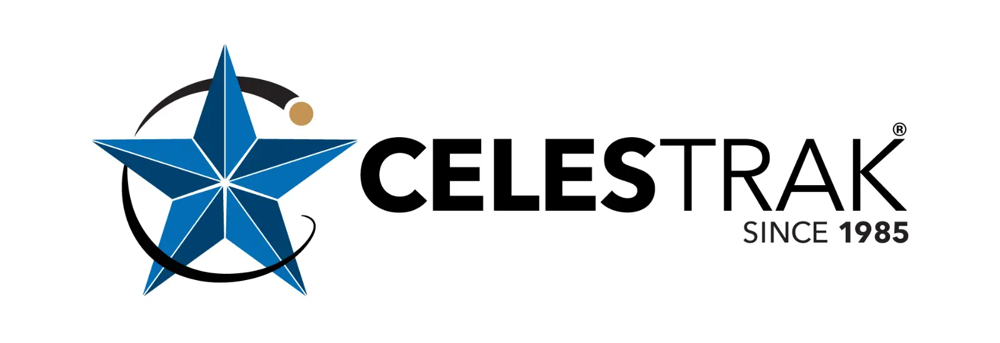

All Your Vital Data. In One Dashboard.
MyMET centralizes real-time data for Earthquakes, Weather Alerts, Water Levels, and Space Weather. Stay informed, stay prepared.
One App. Four Perspectives.
Access critical data from a single, unified interface.
Seismic Activity
Get instant alerts and detailed reports on seismic activity near you and around the globe.
Meteorology
Receive timely warnings for severe weather, from tropical storms to heavy rainfall, tailored to your location.
Weather and Flood
Monitor river and coastal water levels in real-time to stay ahead of potential flood risks.
Space and Aeronautics
Track solar flares and geomagnetic storms that can impact satellites, power grids, and communications.
POWERED BY GLOBAL & LOCAL DATA LEADERS
